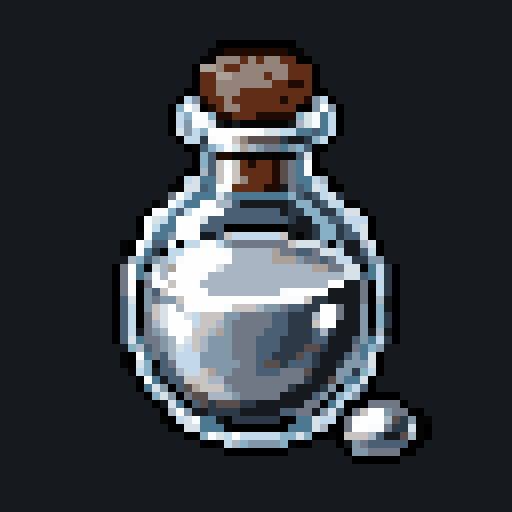
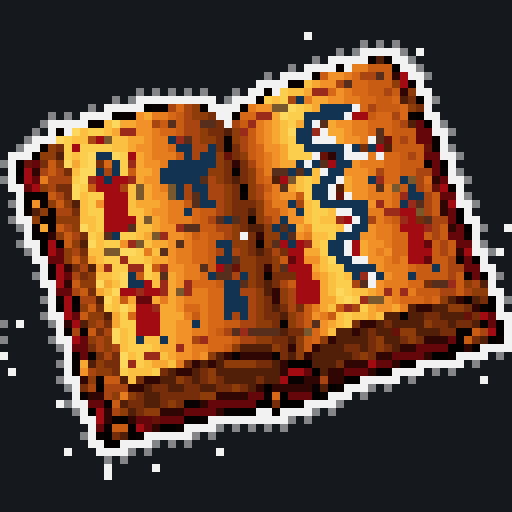

MiningThe mine runs in one-minute sessions. Every minute has a challenge and a threshold in bits. You hash
sha256(address ‖ nonce ‖ challenge) for the whole minute and keep the hash with the most leading zero bits.
In the next minute you submit that hash together with the submit price in ETH. One address submits once per minute.
The hash only has to clear the threshold: how far above it lands does not matter. The ingredient is sealed until the minute
after your submit has been ticked with a seed nobody could know when you paid; then its type and tier are rolled, with the same
odds for every find whatever the network does. Your next submit reveals it, or you press Reveal.
| Rule | Value |
|---|---|
| Threshold corridor | 30 … 43 bits |
| Retarget | every window, at most a few bits per step, from the estimated network hashrate and the target of K mints per hour |
| Tier roll at the reveal | a random roll in bits, each bit half as likely as the one before: Uncommon from 2 bits (1 in 4), Rare from 4 (1 in 16), Epic from 7 (1 in 128), Legendary from 10 (1 in 1,024); after the upgrade roll a find comes out Common 70.3 %, Uncommon 22.3 %, Rare 6.3 %, Epic 0.98 %, Legendary 0.14 % |
| Supply extras | every N minted pieces of a type at a tier add one bit to the roll that tier needs for that type |
| Rarity unlocks | tiers unlock permanently as the season's finds add up |
| Upgrade roll | 1 in 16 reveals come out one tier higher |
| Mythic key roll on reveal | one in N reveals drops an unclaimed mythic key |
| Submit price | price0 × (1 + √(E / D)) × network pressure, where E is mined minus burned; no ceiling |
| Network pressure | ±12.5 % per window when the mint rate is above or below K; floor 1, ceiling ×1000 |
| Prima materia | the fixed reserve the mine draws on; every submit consumes one measure; K halves at 50 %, 25 % and 12.5 % left; mining ends at 0 |
| Farm multiplier | K grows with log2 of the network hashrate over a reference, capped |
| Type | one of 40 ingredient types, uniformly random: 8 metals, 8 minerals, 8 herbs, 8 woods, 8 beast parts |
 Potion of Purification
Potion of Purification
Two herbs of one tier brew instantly into one potion of that tier. Every refining attempt burns one potion.
 Furnaces and refining
Furnaces and refining
A furnace is built from ingredients of its own tier; it refines ingredients up to its tier, and a furnace hotter than the ingredient adds a bonus. Refining burns N ingredients of one type and tier plus a potion of that tier; on success one ingredient of the next tier comes out, on failure everything is lost. N follows the heat of the network: 10 at the corridor floor, fewer when the threshold is high.
| Furnace | Built from (tier of the furnace) | Refines | Cooldown |
|---|
| Refining tier | Success | Hot furnace bonus |
|---|
 Crucible
Crucible
Ten ingredients of one tier melt into random ingredients of the same tier. Choosing the output category costs pieces. Every output piece rolls for a tier up (Legendary cannot rise) and, at higher tiers, risks a tier down.
| Tier | Out, any category | Out, chosen category | Tier up | Two tiers up | Tier down |
|---|
 Ritual items
Ritual items
Five ingredients by the item's recipe are sealed into a ritual item. Their tiers may be mixed: the item takes the tier of one of the five, drawn evenly at the reveal, so each tier comes out in proportion to how many of the inputs carry it (four Rare and one Uncommon: Rare four times in five). A rite of more than one tier is unstable: every extra tier adds 5 % to the chance that it breaks, at most 20 % with all five tiers, and a broken rite yields nothing; all five inputs burn either way. After the draw there is a chance of one tier higher and a roll for a mythic key bound to the item kind, at the drawn tier's odds. The first five kinds are required for the soul, the last three are optional enhancers (an empty enhancer slot counts as Common).
| Item | Metals | Minerals | Herbs | Woods | Beasts | Role |
|---|
| Tier | Tier up | Mythic key |
|---|

Mythic keysTwenty-one unique keys, an ERC-721 collection of their own, each the signature belonging of a named alchemist and bound to one item kind. A key drops from a reveal or a craft roll while unclaimed keys remain. In the summoning a key in its slot yields the named 1/1 alchemist.
| Key | Alchemist | Slot |
|---|
 The Cauldron and stage two
The Cauldron and stage two
Every submit price flows into the Kettle. Once an hour anyone may tick it (the keeper does, at the top of the hour): 40 % of the new ether goes to the Cauldron, a multisig Safe at a public address, and thickens for the ritual of the Philosopher's Stone; 60 % becomes steam, and a twenty-fourth of the steam in the Kettle drips into the stream every hour. The mine, the workshop and the souls are the opening act. The stream is split by weight: the soul's rank (Apprentice 1, Adept 4, Master 16, Magister 64, Archmage 256, a named soul 512) times its founder mark (No.1 of its rank weighs double, fading to nothing by No.100, from Adept up; Apprentices carry none). Seats: 3,014 Apprentices, 1,111 Adepts, 833 Masters, 555 Magisters, 21 Archmages and up to 21 named souls, one per mythic key: 5,555 in all. Claims open at the hundredth soul; the steam waits in the Kettle until then and drips from that hour on. A soul claims its share any hour it likes. Stage two summons the alchemists from the souls, and the stream moves to them; past pours stay with the souls. Every line of the lore leads to that ritual; what it asks for and what the Stone is will only be told when the main act begins.